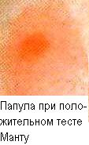

Гиперчувствительность туберкулинового типа
Классический пример туберкулиновой гиперчувствительности - сама реакция Коха. Внутрикожное введение туберкулина сенсибилизированному индивиду вызывает:- - через 12 ч. - миграцию и накопление в коже на месте инъекции СD4- и СD8-позитивных Т-лимфоцитов и отдельных кожных дендритных клеток (близких по морфологии к эпидермальным клеткам Лангерганса, но лишенных специфической для последних ракеткообразной гранулы Бирбека).
- - через 24-48 ч. отдельные Т-лимфоциты проходят в эпидермис, оттуда в дерму мигрируют клетки Лангерганса, а в очаг приходит волна мигрирующих макрофагов
- - после 72 ч. макрофаги, лимфоциты и кератиноциты эпидермиса над очагом экспрессируют антигены ГКГС.

Покраснение и отек дермы на месте инъекции, достигают максимума через 24 - 48 часов после введения антигена. Отек эпидермиса отсутствует, в отличие от контактной гиперчувствительности. Картина характеризуется дерматологами как папула. В центре может появиться казеозный некроз.Аналогичной по механизмам и по логике своего применения являются аллергопроба Манту, реакция Фернандеса с антигенами бацилл проказы (лепромин) и кожные аллерготесты на бруцеллез, гистоплазмоз, коккцидиоз и лейшманиоз.
Кроме аллергопроб на инфекции, с аллергией туберкулинового типа можно столкнуться при бериллиевом и циркониевом профессиональных дерматитах. При бериллиозе, кроме кожных, имеются бронхолёгочные поражения по типу аллергического бронхоальвеолита, с участием иммунокомплексного и ГЗТ-механизма. Заболевание, во многом, протекает аналогично описанным выше АА и дает исход в интерстициальный пневмофиброз (синдром Хаммана-Рича). Кожная аллергопроба Израеля-Куртиса с солями бериллия подтверждает сенсибилизацию. Описаны случаи тяжелейшей сенсибилизации после крайне непродолжительного, длившегося порядка 20 минут, случайного контакта с бериллием, который старые немецкие авторы именовали “чёртов металл” (Б.М.Корнев, 1976, цит. по Е.М.Тарееву, А.А.Безродных).
|
|
|
|
|
|